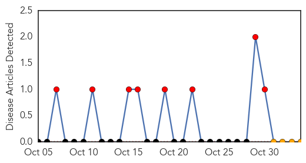
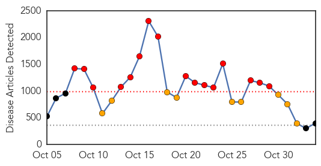

Yellow Fever
30-Day Web Trend
8 alerts, 0 warnings

30-Day Twitter Trend
0 alerts, 0 warnings

Article Locations

Article Confidences

Top Articles:
-
No articles found for Nov 03, 2014
Top Tweets:
-
No tweets found for Nov 03, 2014
Ebola
30-Day Web Trend
16 alerts, 9 warnings

30-Day Twitter Trend
2 alerts, 16 warnings
Article Locations

Article Confidences

Top Articles:
- 1.000
- Canada Suspends Visas for Residents and Travelers From Ebola Outbreak Countries
- 1.000
- State of Maine, nurse reach settlement on Ebola case
- 1.000
- Nurse, Maine settle Ebola quarantine suit
- 1.000
- UN employee taken to hospital in France with Ebola diagnosis
- 1.000
- Ebola: health fears stop British journalist from hosting awards
- 1.000
- Prepared for Ebola: Hospital adopts plan for pandemic
- 1.000
- U.S. nurse, Maine settle Ebola quarantine suit
- 1.000
- NY Doctor Improves; Oregon Patient Now 'Low Risk'
- 1.000
- Duke University patient tests negative for Ebola, remains in isolation
- 1.000
- Sierra Leone says another doctor dies of Ebola
- 1.000
- Ebola: Fifth doctor has deadly virus in Sierra Leone
- 1.000
- Fifth Sierra Leone Doctor Dies After Treating Patients
- 1.000
- Nurse, Maine settle Ebola quarantine suit
- 1.000
- Mass Ebola outbreak 'is unlikely' - Headlines, features, photo and videos from ecns.cn
- 1.000
- Sierra Leone loses fifth doctor to Ebola
- 1.000
- 'Ebola' patient at London hospital tests negative for virus
- 1.000
- 'Ebola' patient at London hospital tests negative for virus
- 1.000
- Ebola tops agenda at WHO African leaders meeting
- 1.000
- Doctor dies of Ebola
- 1.000
- Canada is latest country to ban entry from Ebola hot spots
- 1.000
- 'Ebola' Patient Might Be On Campus For Study [Report]
- 1.000
- Another Sierra Leone doctor tests positive for Ebola; France treating UN patient
- 1.000
- Ebola: London woman tests negative
- 1.000
- Vietnamese patient suspected of Ebola has only malaria
- 1.000
- Court Rules Against Quarantine Of Hickox Representing A Victory For Science And Civil Liberties – The Moderate Voice
- 1.000
- Vermonter voluntarily quarantined after trip to West Africa
- 1.000
- PH, Taiwan bracing for Ebola
- 1.000
- AU to engage private sector in fighting Ebola
- 0.999
- NC man awaits results of second Ebola test
- 0.999
- UNICEF doubles staff to fight Ebola in West Africa
- 0.999
- UNICEF to boost staff in Ebola-hit countries; UN health chief deplores lagging vaccine research
- 0.999
- In Sierra Leone, vaccinations another casualty of Ebola
- 0.999
- Parliament: Singapore to impose visa requirements on 3 countries with Ebola spread, Singapore News & Top Stories
- 0.999
- Ebola train of events is embarrassing
- 0.999
- UNICEF to boost staff in Ebola-hit countries; UN health chief deplores lagging vaccine research
- 0.999
- Ebola survivors need to practice safe sex
- 0.999
- U.S. Ebola nurse, Maine settle quarantine suit; patient in isolation at Duke
- 0.999
- WHO Condemns Lack Of Ebola Research For Poorer Populations
- 0.999
- Kaci Hickox, Maine Settle Quarantine Suit
- 0.999
- Coverage of Ebola warrants asking, 'which lives matter?'
- 0.999
- Ebola in Sierra Leone 'spreading 9 x faster than 2 months ago', campaigners warn
- 0.999
- Nationals from Ebola-hit West African countries need visa to enter Singapore from Nov 5, Government & Economy
- 0.999
- This Map Offers A New Perspective On Ebola Crisis In Africa
- 0.999
- Ebola nurse, Maine settle quarantine suit
- 0.999
- This Map Shows You Every Ebola Outbreak in History
- 0.999
- Ebola appeal raises £10m in 5 days — RT UK
- 0.999
- U.S. nurse, Maine settle Ebola quarantine suit
- 0.999
- Ebola’s nasty surprise
- 0.999
- China goes ahead with its anti-Ebola aid --China Economic Net
- 0.999
- UPDATE 1-WHO says currently no Ebola cases in Mali, 39 contacts sought
Showing top 50 articles...
Top Tweets:
- 0.932
- RT: Inbound travelers from countries w/ widespread Ebola now get Check & Report Ebola (CARE) Kits on arrival. @cdctravel h…
- 0.901
- RT: Ebola Q & A with infectious disease experts Smith and Racaniello http://t.c…
- 0.794
- RT: Without partners to run Ebola care facilities the Ebola crisis will not end and people will continue to die unnecessarily. …
- 0.702
- Canada is investing additional $23.5 mil on Ebola vaccines and drugs says. And donated PPE has arrived in West Africa.
- 0.680
- Currently there has been no report of dog to human transmission or showing symptoms of Ebola
- 0.678
- RT: Ebola widespread in Guinea Liberia and Sierra Leone. Latest update: 13703 cases 4920 deaths http://t.co/qzdWE208dL http://t…
- 0.672
- RT: A woman with a fever is being tested for Ebola at St George's Hospital in Tooting London c4news
- 0.658
- Le Canada a pris la décision de ne plus délivrer de visa aux ressortissants des pays les plus touchés par le virus Ebola.
- 0.656
- hey Bobby Joe Ebola I see that you are tweeting Ebola check out http://t.co/U0M8jd1ElC for up to the minute Ebola info.
- 0.638
- Wow! MT: EPA's Paul Lemieux: Ebola patient generates 30-40 times more waste than other patients --15-16 95-gal drums/day. IOM
- 0.629
- Ebola Kills Sierra Leone Doctor UN Doubles Staff. http://t.co/d0zXlYYgIs
- 0.624
- 'Ebola' patient at London hospital tests negative for virus. http://t.co/gPROzGArVk
- 0.600
- RT: Nasal spray vaccine has potential for long-lasting protection from ebola virus (press release): A nasal vaccin... http://…
- 0.599
- hey UW Public Health I see that you are tweeting Ebola check out http://t.co/U0M8jd1ElC for up to the minute Ebola info.
- 0.578
- RT: Ebola Update: Post-arrival active monitoring has begun in 6 states w/ about 70% of travelers from Guinea Liberia & Sierra…
- 0.577
- Regional ETU status to Ebola outbreak in West Africa http://t.co/nBAsCut6DU via ElbowOutEbola
- 0.573
- hey Medical Health News I see that you are tweeting Ebola check out http://t.co/U0M8jd1ElC for up to the minute Ebola info.
- 0.558
- 10 Things That Kill the Ebola Virus. http://t.co/gsW3XGphkz
- 0.527
- hey Reporting on Health I see that you are tweeting Ebola check out http://t.co/U0M8jd1ElC for up to the minute Ebola inf
- 0.507
- Canada dedicating extra $1mil for quarantine officers for airports to try to detect Ebola cases any travel to Canada says.